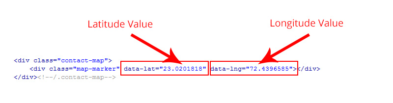
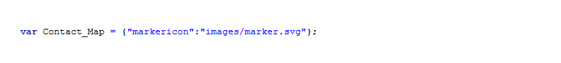
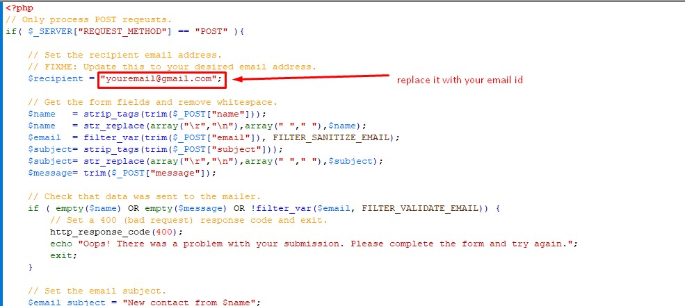

Angles Multipurpose One & Multi Page HTML5 template
Thank you very much for purchasing my template. I hope you love it. As far as the documentation is concerned, we have tried to cover as much as possible to help you customise it.
This HTML Built with Bootstrap
Bootstrap makes front-end web development faster and easier. It's made for folks of all skill levels, devices of all shapes, and projects of all sizes.
Change Colors
It is very simple to change the colors, we have used blue as primary color.
if you need Green Color just add it below style.css
<link rel="stylesheet" href="css/color-green.css">
Included Files
Mainly three main CSS files are used in this theme. The first one bootstrap.css, second one is style.css which for this template and third one is responsive.css to control responsive layouts.
font-awesome.css gives you scalable vector icons that can instantly be customized — size, color, drop shadow, and anything that can be done with the power of CSS. developer website
animate.css is a bunch of cool, fun, and cross-browser animations for you to use in your projects. Great for emphasis, home pages, sliders, and general just-add-water-awesomeness. (waypoints.min.js is necessary to use animations) developer website
owl.carousel.css and owl.carousel.min.js Touch enabled jQuery plugin that lets you create a beautiful responsive carousel slider. (Used in "Main Slider" in Homepage and in more places) developer website
magnific-popup.css and jquery.magnific-popup.min.js Magnific Popup is a responsive lightbox & dialog script with focus on performance and providing best experience for user with any device (Used in "Why Choose us" and "Latest Projects" section in Homepage) developer website
jquery.counterup.min.js Counter-Up is a lightweight jQuery plugin that counts up to a targeted number when the number becomes visible. (Used in Number Counters section in Homepage) developer website
load-maps.js This function will render a Google Map onto the selected jQuery element
modernizr.min.js Modernizr is a JavaScript library that detects which HTML5 and CSS3 features your visitor's browser supports. In detecting feature support, it allows developers to test for some of the new technologies and then provide fallbacks for browsers that do not support them. developer website
jquery.downCount.js jQuery countdown plugin that accounts for timezone. developer website
masonry.pkgd.min.js Masonry works by placing elements in optimal position based on available vertical space, sort of like a mason fitting stones in a wall. You’ve probably seen it in use all over the Internet. developer website
general-scripts.js Used for custom Jquery Functions
Google Map Settings
You have to change latitude and longlatitude in your HTML file (used in Homepage and contact page). To find your location's latitude and longlatitude click here
All Settings for map are in load-maps.js from js folder, You can find map marker path in this file
Contact form
Just open mailer.php file from the route folder and set you email adress as per screenshot
Support
Once again, thank you so much for purchasing this template. if you have any questions relating to this template, please feel free to contact us.
Email Us at : litmusthemes@gmail.com